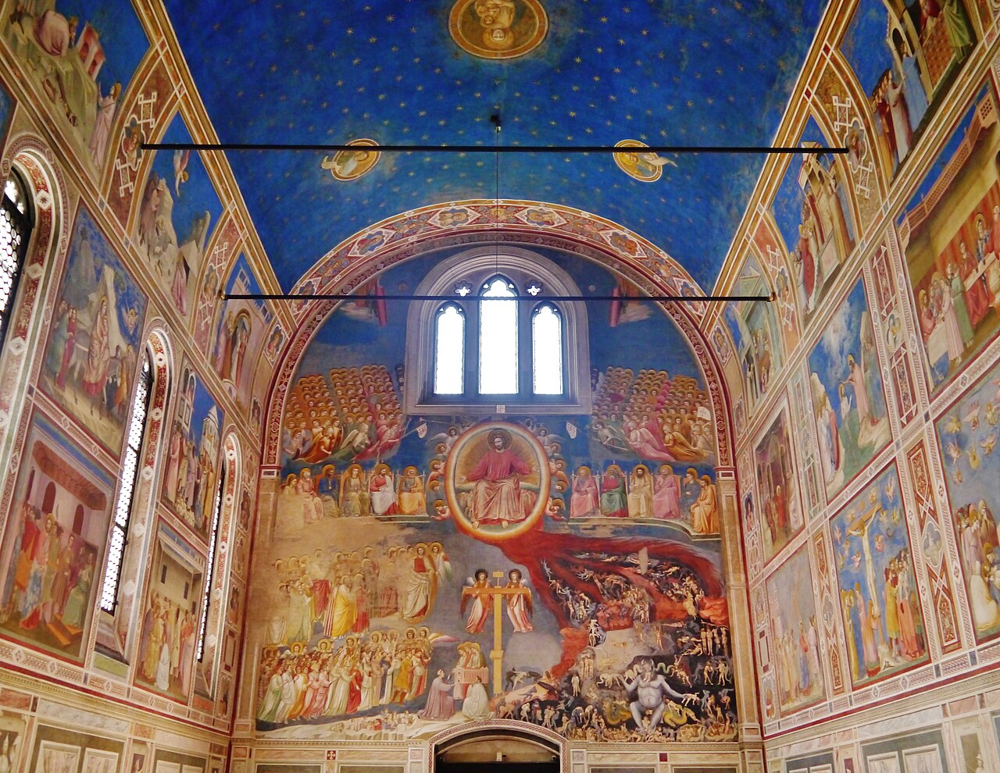
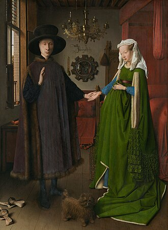
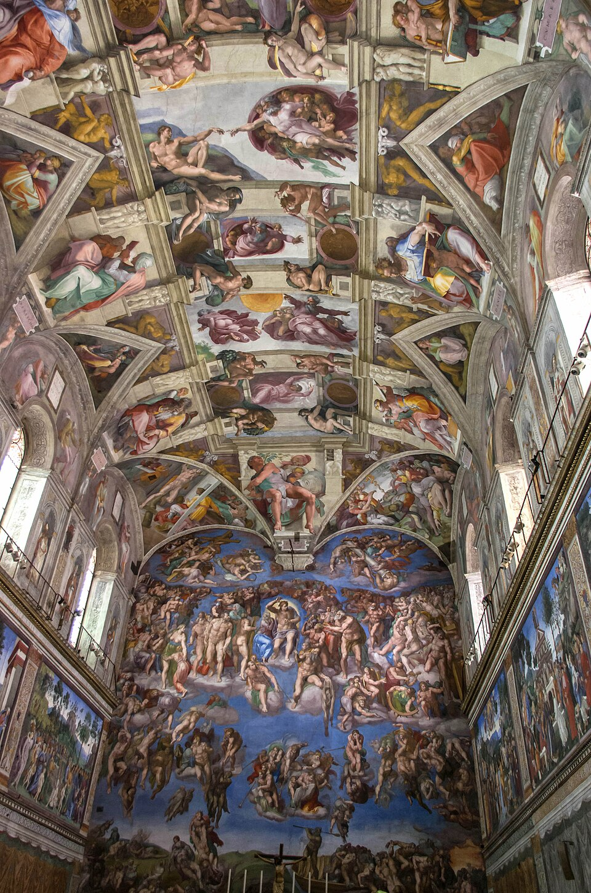

Arena Chapel frescoes
Late Medieval → Proto-RenaissancePaduaFresco cycle
A bridge toward emotional realism and believable space.
More ↗c. 1300 → 1600
A reordering of pictorial space in which observation, proportion, and classical memory become newly deliberate




Overview
Renaissance art makes looking feel more measured and more self-conscious: space deepens, bodies gain weight, and the classical past returns as both model and provocation, though Italy and the north arrive there differently.
Works
A bridge toward emotional realism and believable space.
More ↗Tiny detail, surfaces, and symbolism at a very high level.
More ↗
A compact masterclass in balance, modeling, and calm psychological presence.
More ↗
The cleanest statement of Renaissance order and intellect.
More ↗
Monumental anatomy, drama, and theological ambition.
More ↗Next